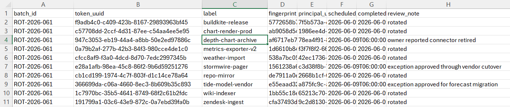
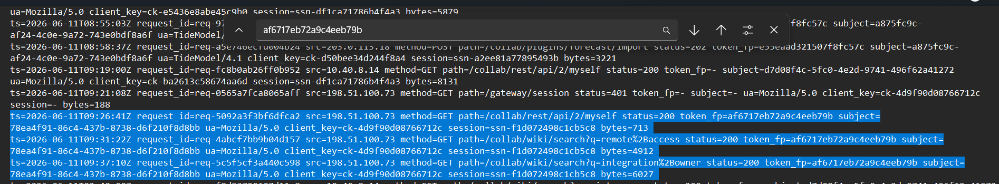
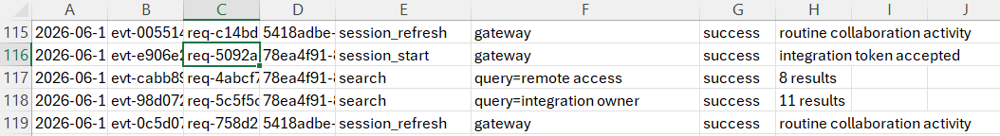
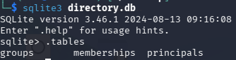
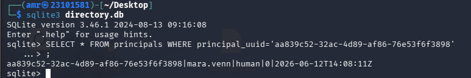
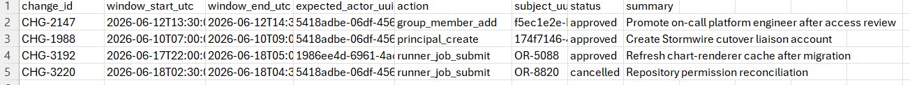
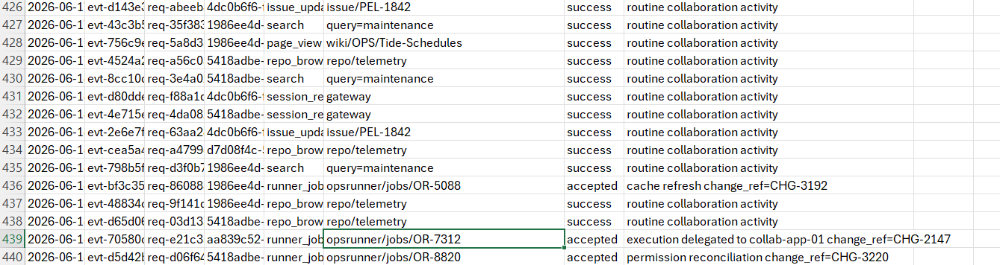
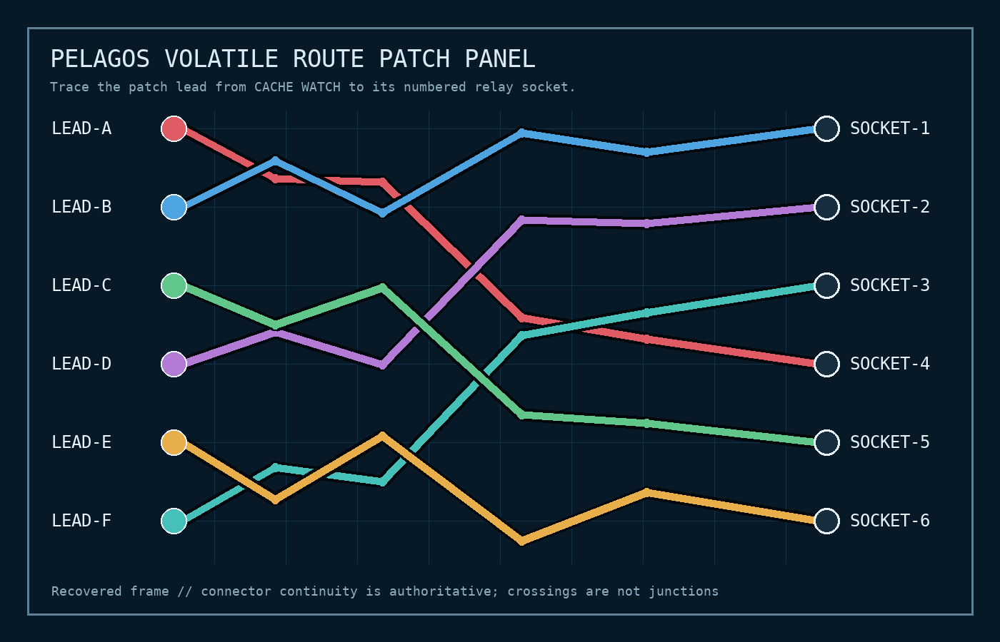
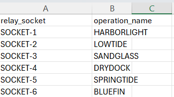
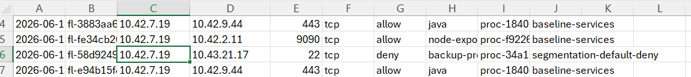

Introduction
Hello there! It's me again, back with another CTF competition — z0d1ak.
This time, I focused on the DFIR challenges, and we're going to solve one of them together: Unrotated.
The challenge gives us a ZIP archive containing several evidence sources: identity records, gateway logs, collaboration audit data, a directory database, governance records, repository access logs, host artifacts, and network telemetry. We have to connect those artifacts to answer seven questions and recover the flag.
To solve these questions, I decided to follow the attack kill chain instead of treating each question as a separate problem. And honestly, this turned out to be the right approach.
The Seven Questions
- Which emergency-rotation credential became the intrusion's initial access path?
- When did the first confirmed intrusion session authenticate successfully?
- Which application-local identity provided persistence?
- Which legitimate change record was misappropriated as cover?
- Which delegated runner job marks the host compromise?
- What operation name and external rendezvous were attributed to that execution?
- Which non-production hostname received the follow-on access attempt?
1. Finding the Initial Access
I started by looking at the identity side of the environment. The partner registry contains two normal partner credentials:
stormwire-pager
tide-model-vendor
That alone does not give us anything malicious. I then checked
identity/rotation_manifest.csv and looked for entries that were scheduled
for rotation but did not have a completed_utc value.
tide-model-vendor
stormwire-pager
depth-chart-archive
The first two have explicit exception notes explaining why their rotation was still
pending. depth-chart-archive is different, it has no completion timestamp,
and its review note says the owner reported the connector retired.

depth-chart-archive.
And then I noticed something even more interesting: there was no corresponding entry for this credential in the partner registry.
So we have a credential that was supposedly retired, was not completed in the rotation manifest, and was not represented by the normal partner registry.
Who the hell is this?
That was enough for me to stop treating it as normal configuration and start following the credential's fingerprint:
af6717eb72a9c4eeb79bSearching for that fingerprint in the gateway activity gave us the first real thread to pull.

depth-chart-archive token fingerprint.
The sequence is clear: the token first authenticates, then the same principal
performs reconnaissance, creates a new principal, and adds that principal to
platform-admins.
2. Finding the First Successful Authentication
Now that the suspicious credential is identified, I wanted the earliest confirmed successful authentication rather than just the first suspicious action I happened to notice.
The gateway log gives us the request ID:
req-5092a3f3bf6dfca2
I followed that request ID into collaboration/audit.csv. The matching
audit event is a successful session_start for actor
78ea4f91-86c4-437b-8738-d6f210f8d8bb.

That gives us the first confirmed successful intrusion session:
The same actor then searches for remote access and
integration owner, which is useful because it gives us reconnaissance
immediately after the initial authentication.
3. Finding the Persistence Identity
The next question is: what did the attacker create after getting in?
The original session belongs to:
78ea4f91-86c4-437b-8738-d6f210f8d8bbSearching for this actor in the gateway log shows an administrative request:
POST /collab/admin/usersThe newly created principal is:
aa839c52-32ac-4d89-af86-76e53f6f3898
At this point I followed the UUID into collaboration/directory.db.
First, I checked the database structure:

directory.db.
.tables
The important table is principals. I queried the exact UUID:
SELECT *
FROM principals
WHERE principal_uuid =
'aa839c52-32ac-4d89-af86-76e53f6f3898';
mara.venn.
And finally...
Let's see who the winner is.
The UUID belongs to mara.venn. The database also shows that this
principal was created at 2026-06-12T14:08:11Z and was later disabled
during the security review.
4. The Change Record Used as Cover
Creating a new privileged identity is noisy. The attacker therefore tried to make the activity look like an authorized administrative change.
HELLO, I'M MALICIOUS.
The audit records show the malicious principal_create and
group_member_add events carrying:
change_ref=CHG-2147
I checked governance/change_ledger.csv and found the legitimate
change record:

CHG-2147 record that was reused as cover.
The important correlation here is not simply that CHG-2147 exists.
Its legitimate entry expects actor
5418adbe-06df-4561-bf33-36b98580b16e and a different subject.
The malicious events instead come from
78ea4f91-86c4-437b-8738-d6f210f8d8bb and target
aa839c52-32ac-4d89-af86-76e53f6f3898.
So the change reference is real, but the activity attached to it is not the activity described by the legitimate change.
5. Finding the Delegated Runner Job
Now we move from identity activity to execution. On
2026-06-18, the malicious principal submitted:
OR-7312
The collaboration audit record says the job was accepted and delegated to
collab-app-01, while still carrying the same
change_ref=CHG-2147.

OR-7312 and its change reference.
The host journal independently contains activity for OR-7312 on
collab-app-01. The repository accesses happen later:
04:02:17Z— archive ofnavigation04:04:39Z— archive ofidentity-config04:07:02Z— attempted archive ofbackup-orchestrator, which returned404
This timing makes OR-7312 the delegated execution that sits immediately
before the repository access performed by the malicious principal.
6. Finding the External Rendezvous
This is where several evidence sources have to be combined. The source host is:
10.42.7.19The host inventory identifies that address as:
collab-app-01
environment: productionThe firewall log then gives us the suspicious outbound connection:
10.42.7.19 → 203.0.113.86:8448
process=jvm-agent
process_ref=proc-7ae13f0c35d8
rule=legacy-general-egress
This is especially interesting because 203.0.113.86:8448 is not one
of the explicitly approved egress destinations. The approved list contains only
the documented partner and package-mirror destinations.
The next step was to determine which volatile execution produced this connection. The runner cache contains several route snapshots. The relevant image/cache sequence identifies the route entry associated with:
pel-8
starboard-3
watch-64a7a9d8bbd9That route corresponds to the LEAD-E line on the recovered patch panel.

The next lookup is host/relay_socket_legend.csv:

SOCKET-6 maps to the operation name BLUEFIN.
Putting those pieces together gives:
LEAD-E
↓
SOCKET-6
↓
BLUEFIN
↓
203.0.113.86:84487. Finding the Follow-On Access
We are almost there.
The same source host and the same suspicious process later attempt another connection:
10.42.7.19 → 10.43.18.61:22
process=jvm-agent
process_ref=proc-7ae13f0c35d8
action=deny
rule=segmentation-default-deny
segmentation-default-deny.
Now we only need to resolve the destination IP. The host inventory maps
10.43.18.61 to:
console-cpt-03
environment: non-production
owner: network-labSo the attacker attempted a follow-on SSH connection to a non-production host, but the network segmentation policy stopped it.
Complete Kill Chain
At this point, all the pieces finally fit together. Instead of a wall of text, here is the investigation as one visual chain:
What started as a supposedly retired credential eventually led through authentication, reconnaissance, malicious identity creation, privileged group membership, abuse of a legitimate change record, delegated execution, external communication, repository collection, and a blocked follow-on access attempt.
Answer Summary
| # | Question | Answer |
|---|---|---|
| 01 | Initial access credential | depth-chart-archive |
| 02 | First successful authentication | 2026-06-11T09:26:41Z |
| 03 | Persistence identity | mara.venn |
| 04 | Misappropriated change record | CHG-2147 |
| 05 | Delegated runner job | OR-7312 |
| 06 | Operation / rendezvous | BLUEFIN@203.0.113.86:8448 |
| 07 | Follow-on hostname | console-cpt-03 |
Flag
zdk{A_hUmAN_re4D5_7HE_w4KE_noT_7he_1ABE15}
Conclusion
This was a really good and valuable CTF.
What I especially liked was the way the scenario was built. Instead of giving us one obvious artifact and asking us to extract a flag from it, the challenge made us build the story ourselves by connecting evidence from completely different sources.
The biggest lesson for me was to stop looking at each artifact as an isolated piece of evidence and instead follow the timeline and kill chain. Once the identifiers started lining up, the investigation became much easier to understand.
And honestly...
I really loved the way they built the scenario. 😄
It felt much more like an actual investigation than simply running a command and getting a flag.